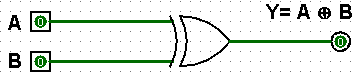

XOR Logic Gate
The 'Exclusive-OR' gate is a circuit which will give a high output if either, but not both, of its two inputs are high. An encircled plus sign () is used to show the EOR operation.

The 'Exclusive-OR' gate is a circuit which will give a high output if either, but not both, of its two inputs are high. An encircled plus sign () is used to show the EOR operation.